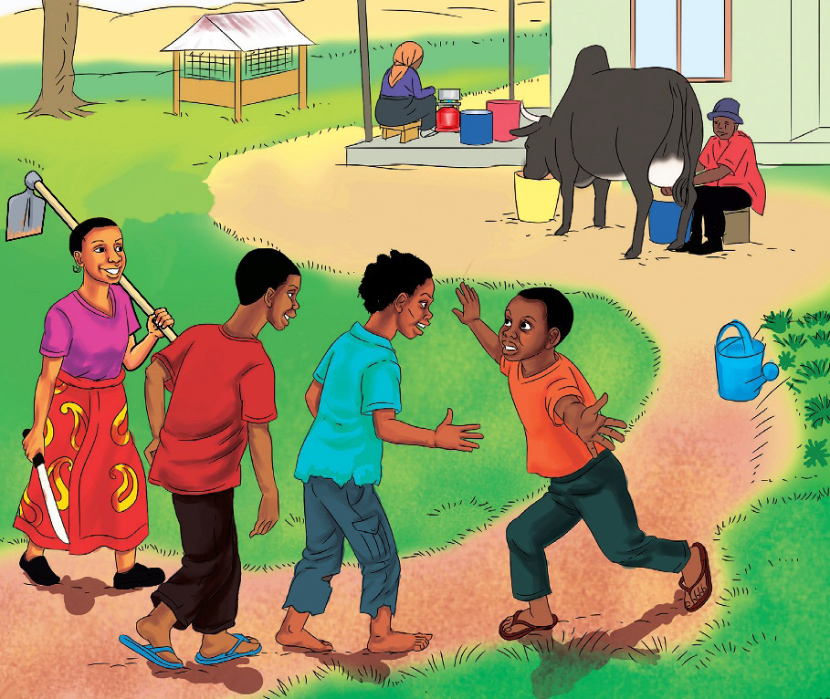

Ufahamu
Soma hadithi ifuatayo, kisha jibu maswali yanayofuata.
Umuhimu wa familia
Hapo zamani za kale, palikuwepo na familia moja yenye upendo. Watu wa familia hiyo waliishi kwa furaha na kushirikiana kwa kila jambo. Katika familia hiyo, alikuwepo babu mwenye umri wa miaka mia moja. Babu huyo aliitwa Mzee Mwendapole. Mzee Mwendapole aliwasisitiza wanafamilia kudumisha upendo na kufanya kazi kwa bidii ili kuwa na kipato cha kutosha. Wanafamilia walipokea ushauri na kuufanyia kazi.
Kuanzia asubuhi hadi mchana, walifanya kazi pamoja; jioni waliketi upenuni na kula pamoja. Baada ya chakula, kila mmoja alitoa burudani na kituko chake. Mzee Mwendapole ndiye aliyewavutia zaidi kwa michapo yake ya kusisimua na kufurahisha.
Katika familia hiyo, walikuwepo watoto wawili pacha, Kulwa na Doto. Kulwa alipenda kufanya kazi na kushirikiana na wenzake. Doto alipenda kujitenga na kufanya mambo mengi peke yake. Alipiga chenga masuala yote yaliyohusu umoja. Babu yake alimshauri kushirikiana na familia kwani, ushirikiano katika familia ni muhimu sana. Alisema, “Hakuna binadamu anayeweza kufanikiwa kwa kuishi peke yake.” Hata hivyo, Doto alimpuuza.
Alipofika umri wa ujana, nduguze walizidi kumshauri ashirikiane na wenzake, lakini Doto alikasirika. Akaamua kwenda kuishi porini. Aliondoka nyumbani kwa makeke. Huko porini, alitembea kwa mwendo wa kibabe na kwa hatua madhubuti.
Alichagua eneo zuri, akaandaa makazi na kulima shamba kubwa. Alilima kwa nguvu huku akijisifu, “Mimi ni nyati, shujaa, sishindwi kitu na sihitaji msaada. Siku zote shujaa husimama peke yake.”
Miezi mitatu baadaye, mazao aliyolima yakastawi vizuri sana. Alipanda juu ya mti mrefu na kutazama mazao kwenye shamba lake. Yalikuwa mengi na yalistawi vizuri sana. Alitabasamu huku akikuna kidevu kwa jeuri. Akanyoosha mkono na kusema, “Nilisema mimi sishindwi kitu, tazama mali ya shujaa. Nitakula nishibe miaka mingi kwa kadiri nitakavyo. Mungu anipe nini?”
Majuma mawili kabla hajaanza kuvuna, Doto alipatwa na homa kali. Akajitahidi kukaza roho na kutafuna mizizi ili kujitibu, lakini homa haikumwacha. Alidhoofika, akakosa nguvu. Mara, akayaona makundi ya ndege, ngedere na nyani wakila na kuharibu mazao yake. Walikula kwa furaha kama wanafanya sherehe. Walikwanyua mahindi na kung’oa mimea aina kwa aina. Wakairusha huku na kule. Doto alitamani kuamia lakini mwili wake ulikuwa taabani. Hakuweza hata kuinua mkono. Akabaki akiwatazama tu huku machozi yakimchuruzika. Vitendo vya makundi hayo ya wanyama vilimkata maini.
Aliikumbuka familia yake: akajisemea, “Sasa nimetambua umuhimu wa familia. Ningekuwa na familia yangu, haya yote yasingenitokea. Leo nimeamini maneno ya babu. Ama kweli umoja ni nguvu utengano ni udhaifu.”
Siku mbili baadaye, alipata nguvu kidogo akafungasha virago na kurejea nyumbani kwa unyonge. Mwondoko alioondoka nao nyumbani si ule aliorudi nao. Sasa alikuwa ameweka mikono yake nyuma. Safari hii, hakutembea kwa makeke, bali alitembea kwa unyonge kutokana na afya yake kuwa dhaifu.
Alipokelewa na mdogo wake aliyekuwa akitoka shambani kuamia ndege na kulinda shamba dhidi ya wanyama walao mazao. Walipokaribia nyumbani, alimwona dada yake akiwa na jembe begani na panga mkononi akitoka shambani. Hapo nyumbani, alimkuta baba yake akiwa anamkamua ng’ombe maziwa, na mama yake akiwa anapika chakula jikoni. Binamu yake, ambaye alikuwa bustanini akimwagilia mboga, alipomwona, alipiga mbio akamkumbatia Doto kwa furaha.

Watu wote hapo nyumbani walimpokea ndugu yao kwa furaha na moyo mkunjufu. Mara, Kulwa alifika. Alikuwa ametoka hospitalini kumpeleka babu kupata matibabu. Kulwa alifurahi kumwona ndugu yake. Alimkaribisha kwa kusema, “Karibu ndugu yangu!” Babu naye akamkaribisha kwa kusema, “Karibu mjukuu wangu! Hii ndiyo familia yako.” Doto alijibu, “Asante babu.” Aliomba msamaha huku akibubujikwa na machozi na kusema, “Nimeamini hakuna anayeweza kusimama peke yake. Familia ni muhimu sana; iwe kubwa ama ndogo.” Kesho yake, walimpeleka Doto hospitali akatibiwa. Doto akarejea katika afya yake njema na akawa mwenye furaha isiyo na kifani.